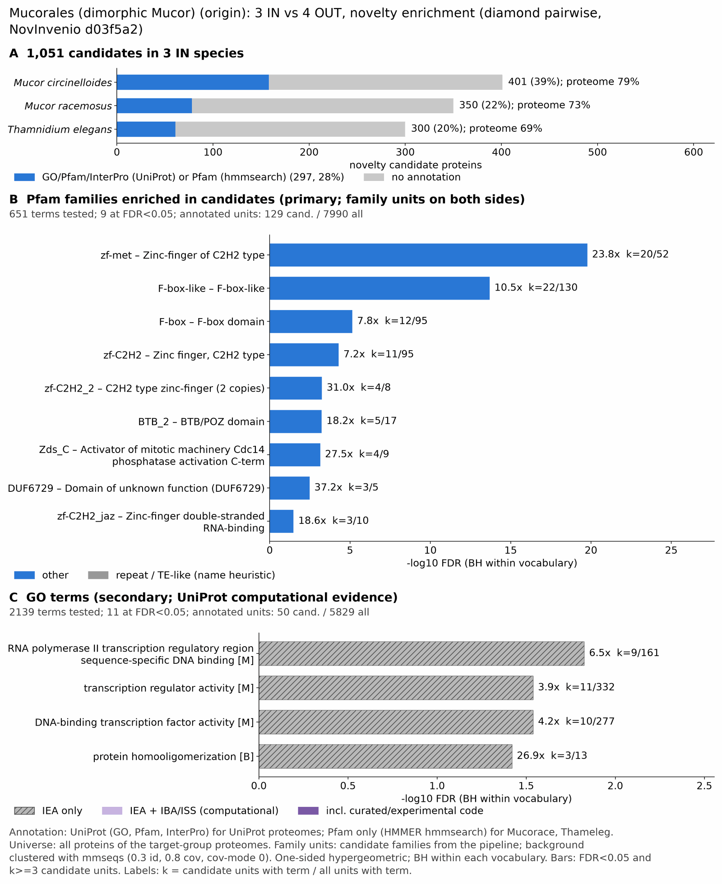

yc mucoromycota: functional enrichment (novelty)
One-sided hypergeometric test per term; Benjamini-Hochberg FDR within each scope, level and vocabulary. Candidates are the novelty candidates: gene families present in the IN group and absent from the OUT group. Universe: proteome. Background clustered: True (35978 sequences in 13781 clusters, mmseqs easy-cluster --min-seq-id 0.3 -c 0.8). Family level: one unit per candidate family and per background cluster.
Sources: Pfam: 2026-01-27-Pfam38.2; InterPro entries: 110.0; GO: releases/2026-07-26; analysis generated 2026-10-24T14:44:26. Source tables: /bigdata/stajichlab/jstajich/projects/NovInvenio_Investigations/studies/fungi/yeast_convergence/yc_mucoromycota/analysis/enrichment/outputs/proteome_clustered.
Full record: PROVENANCE. Run report: report.html.
- Annotation provenance is not fully recorded: PROVENANCE.yaml lists the per-species annotation files and their checksums, but not the UniProt release they come from.
- GO results are secondary. GO annotations include computational evidence (IEA, IBA); the GO evidence column shows if a term has non-IEA support.
- Candidate families (pipeline clustering of candidates) and background clusters (mmseqs clustering of the background proteome) are made by different runs, so family-level counts are not fully comparable.
- Low annotation: the candidate set has less than 50% annotation for Pfam 24.4%, InterPro 15.0%, GO 7.5%, any vocabulary 28.3%. Enrichment for these vocabularies has low power.
- GO and InterPro cover only 1 of 3 species: Mcir. No GO and InterPro annotation for Mucorace, Thameleg; these species add no units to the GO and InterPro tests, so those results describe the covered species only.
Summary figure

Annotation coverage
Fraction of proteins with at least one term per vocabulary. Universe = all proteins of the species; candidates = the candidate set.
| Species | Set | Proteins | Pfam | Pfam clan | InterPro | GO | Any |
|---|---|---|---|---|---|---|---|
| Mcir | universe | 12143 | 74.1% | 61.2% | 78.5% | 67.5% | 78.7% |
| Mcir | candidates | 401 | 29.2% | 22.9% | 39.4% | 19.7% | 39.4% |
| Mucorace | universe | 12099 | 73.4% | 60.4% | 0.0% | 0.0% | 73.4% |
| Mucorace | candidates | 350 | 22.3% | 14.3% | 0.0% | 0.0% | 22.3% |
| Thameleg | universe | 12787 | 69.2% | 57.1% | 0.0% | 0.0% | 69.2% |
| Thameleg | candidates | 300 | 20.3% | 14.7% | 0.0% | 0.0% | 20.3% |
| ALL_IN | universe | 37029 | 72.2% | 59.6% | 25.8% | 22.1% | 73.7% |
| ALL_IN | candidates | 1051 | 24.4% | 17.7% | 15.0% | 7.5% | 28.3% |
Tests summary
Per vocabulary: terms with FDR < 0.05 / terms tested. Protein level counts proteins; family level counts candidate families and background clusters.
| Scope | Level | Cand. units | Pfam sig / tested | Pfam clan sig / tested | InterPro sig / tested | GO sig / tested |
|---|---|---|---|---|---|---|
| whole_set | family | 634 | 9 / 651 | 4 / 254 | 6 / 869 | 11 / 2139 |
| whole_set | protein | 1051 | 13 / 2249 | 6 / 419 | 10 / 1435 | 18 / 2573 |
| Mcir | family | 339 | 4 / 369 | 2 / 229 | 6 / 869 | 11 / 2139 |
| Mcir | protein | 401 | 4 / 619 | 2 / 270 | 10 / 1435 | 18 / 2573 |
| Mucorace | family | 299 | 4 / 516 | 2 / 226 | 0 / 0 (not_available_no_annotated_units) | 0 / 0 (not_available_no_annotated_units) |
| Mucorace | protein | 350 | 6 / 779 | 2 / 266 | 0 / 0 (not_available_no_annotated_units) | 0 / 0 (not_available_no_annotated_units) |
| Thameleg | family | 273 | 3 / 512 | 2 / 230 | 0 / 0 (not_available_no_annotated_units) | 0 / 0 (not_available_no_annotated_units) |
| Thameleg | protein | 300 | 4 / 778 | 2 / 276 | 0 / 0 (not_available_no_annotated_units) | 0 / 0 (not_available_no_annotated_units) |
Top 25 Pfam terms (whole set, family level)
25 rows shown, ordered by FDR then p-value; 9 have FDR < 0.05 (bold).
| Term | Name | k / N cand. | n / M bg | Fold | FDR (BH) |
|---|---|---|---|---|---|
| PF12874 | zf-met: Zinc-finger of C2H2 type | 20 / 129 | 52 / 7990 | 23.822 | 1.69e-20 |
| PF12937 | F-box-like: F-box-like | 22 / 129 | 130 / 7990 | 10.482 | 2.02e-14 |
| PF00646 | F-box: F-box domain | 12 / 129 | 95 / 7990 | 7.824 | 7.13e-06 |
| PF00096 | zf-C2H2: Zinc finger, C2H2 type | 11 / 129 | 95 / 7990 | 7.172 | 5.09e-05 |
| PF12756 | zf-C2H2_2: C2H2 type zinc-finger (2 copies) | 4 / 129 | 8 / 7990 | 30.969 | 5.62e-04 |
| PF02214 | BTB_2: BTB/POZ domain | 5 / 129 | 17 / 7990 | 18.217 | 5.83e-04 |
| PF08632 | Zds_C: Activator of mitotic machinery Cdc14 phosphatase activation C-term | 4 / 129 | 9 / 7990 | 27.528 | 7.14e-04 |
| PF20499 | DUF6729: Domain of unknown function (DUF6729) | 3 / 129 | 5 / 7990 | 37.163 | 0.003 |
| PF12171 | zf-C2H2_jaz: Zinc-finger double-stranded RNA-binding | 3 / 129 | 10 / 7990 | 18.581 | 0.033 |
| PF12855 | Ecl1: TORC1 inhibitor Ecl family | 2 / 129 | 8 / 7990 | 15.484 | 0.442 |
| PF01612 | DNA_pol_A_exo1: 3'-5' exonuclease | 2 / 129 | 9 / 7990 | 13.764 | 0.512 |
| PF08238 | Sel1: Sel1 repeat | 4 / 129 | 52 / 7990 | 4.764 | 0.524 |
| PF18758 | KDZ: Kyakuja-Dileera-Zisupton transposase | 2 / 129 | 12 / 7990 | 10.323 | 0.769 |
| PF13894 | zf-C2H2_4: C2H2-type zinc finger | 2 / 129 | 15 / 7990 | 8.258 | 1.000 |
| PF00560 | LRR_1: Leucine Rich Repeat | 2 / 129 | 18 / 7990 | 6.882 | 1.000 |
| PF13855 | LRR_8: Leucine rich repeat | 2 / 129 | 20 / 7990 | 6.194 | 1.000 |
| PF00857 | Isochorismatase: Isochorismatase domain | 1 / 129 | 5 / 7990 | 12.388 | 1.000 |
| PF01679 | Pmp3: Proteolipid membrane potential modulator | 1 / 129 | 5 / 7990 | 12.388 | 1.000 |
| PF04116 | FA_hydroxylase: Fatty acid hydroxylase | 1 / 129 | 5 / 7990 | 12.388 | 1.000 |
| PF04434 | SWIM: SWIM zinc finger | 1 / 129 | 5 / 7990 | 12.388 | 1.000 |
| PF13919 | ASXH: Asx homology domain | 1 / 129 | 5 / 7990 | 12.388 | 1.000 |
| PF00098 | zf-CCHC: Zinc knuckle | 2 / 129 | 31 / 7990 | 3.996 | 1.000 |
| PF02383 | Syja_N: SacI homology domain | 1 / 129 | 6 / 7990 | 10.323 | 1.000 |
| PF08507 | COPI_assoc: COPI associated protein | 1 / 129 | 6 / 7990 | 10.323 | 1.000 |
| PF10452 | TCO89: TORC1 subunit TCO89 | 1 / 129 | 6 / 7990 | 10.323 | 1.000 |
Top 25 InterPro terms (whole set, family level)
25 rows shown, ordered by FDR then p-value; 6 have FDR < 0.05 (bold).
| Term | Name | k / N cand. | n / M bg | Fold | FDR (BH) |
|---|---|---|---|---|---|
| IPR013087 | Domain:Zinc finger C2H2-type | 22 / 111 | 145 / 6885 | 9.411 | 4.44e-13 |
| IPR050888 | 6 / 111 | 6 / 6885 | 62.027 | 6.66e-09 | |
| IPR001810 | Domain:F-box domain | 15 / 111 | 97 / 6885 | 9.592 | 7.38e-09 |
| IPR032675 | Homologous_superfamily:Leucine-rich repeat domain superfamily | 14 / 111 | 115 / 6885 | 7.551 | 6.96e-07 |
| IPR036047 | Homologous_superfamily:F-box-like domain superfamily | 13 / 111 | 99 / 6885 | 8.145 | 8.25e-07 |
| IPR003604 | Domain:Matrin/U1-C-like, C2H2-type zinc finger | 4 / 111 | 15 / 6885 | 16.541 | 0.011 |
| IPR036236 | Homologous_superfamily:Zinc finger C2H2 superfamily | 7 / 111 | 89 / 6885 | 4.879 | 0.067 |
| IPR003131 | Domain:Potassium channel tetramerisation-type BTB domain | 3 / 111 | 13 / 6885 | 14.314 | 0.113 |
| IPR013941 | Domain:Protein Zds1, C-terminal | 2 / 111 | 5 / 6885 | 24.811 | 0.217 |
| IPR040206 | Family:Protein Zds1/2 | 2 / 111 | 5 / 6885 | 24.811 | 0.217 |
| IPR000210 | Domain:BTB/POZ domain | 3 / 111 | 21 / 6885 | 8.861 | 0.343 |
| IPR022755 | Domain:Zinc finger, double-stranded RNA binding | 2 / 111 | 7 / 6885 | 17.722 | 0.343 |
| IPR051694 | 2 / 111 | 7 / 6885 | 17.722 | 0.343 | |
| IPR045068 | Family:BTB/POZ domain-containing adapter for CUL3-mediated RhoA degradation protein 1-3 | 2 / 111 | 9 / 6885 | 13.784 | 0.522 |
| IPR011333 | Homologous_superfamily:SKP1/BTB/POZ domain superfamily | 3 / 111 | 27 / 6885 | 6.892 | 0.522 |
| IPR015915 | Homologous_superfamily:Kelch-type beta-propeller | 2 / 111 | 27 / 6885 | 4.595 | 1.000 |
| IPR006597 | Repeat:Sel1-like repeat | 2 / 111 | 28 / 6885 | 4.431 | 1.000 |
| IPR000868 | Domain:Isochorismatase-like domain | 1 / 111 | 5 / 6885 | 12.405 | 1.000 |
| IPR002013 | Domain:SAC domain | 1 / 111 | 5 / 6885 | 12.405 | 1.000 |
| IPR006694 | Domain:Fatty acid hydroxylase | 1 / 111 | 5 / 6885 | 12.405 | 1.000 |
| IPR036380 | Homologous_superfamily:Isochorismatase-like superfamily | 1 / 111 | 5 / 6885 | 12.405 | 1.000 |
| IPR040521 | Family:Kyakuja-Dileera-Zisupton transposase | 1 / 111 | 5 / 6885 | 12.405 | 1.000 |
| IPR001179 | Domain:FKBP-type peptidyl-prolyl cis-trans isomerase domain | 1 / 111 | 6 / 6885 | 10.338 | 1.000 |
| IPR024368 | Family:Extender of the chronological lifespan protein Ecl1/2/3 | 1 / 111 | 6 / 6885 | 10.338 | 1.000 |
| IPR036533 | Homologous_superfamily:BAG domain superfamily | 1 / 111 | 6 / 6885 | 10.338 | 1.000 |
Top 15 GO terms (whole set, family level) — secondary, computational evidence (IEA/IBA) included
15 rows shown, ordered by FDR then p-value; 11 have FDR < 0.05 (bold).
| Term | Name | k / N cand. | n / M bg | Fold | FDR (BH) | GO evidence | Families with non-IEA |
|---|---|---|---|---|---|---|---|
| GO:0000977 | molecular_function:RNA polymerase II transcription regulatory region sequence-specific DNA binding | 9 / 50 | 161 / 5829 | 6.517 | 0.015 | IEA_only | 0 |
| GO:0000976 | molecular_function:transcription cis-regulatory region binding | 9 / 50 | 184 / 5829 | 5.702 | 0.015 | IEA_only | 0 |
| GO:0001067 | molecular_function:transcription regulatory region nucleic acid binding | 9 / 50 | 184 / 5829 | 5.702 | 0.015 | IEA_only | 0 |
| GO:1990837 | molecular_function:sequence-specific double-stranded DNA binding | 9 / 50 | 201 / 5829 | 5.22 | 0.021 | IEA_only | 0 |
| GO:0000981 | molecular_function:DNA-binding transcription factor activity, RNA polymerase II-specific | 9 / 50 | 205 / 5829 | 5.118 | 0.021 | IEA_only | 0 |
| GO:0140110 | molecular_function:transcription regulator activity | 11 / 50 | 332 / 5829 | 3.863 | 0.029 | IEA_only | 0 |
| GO:0003700 | molecular_function:DNA-binding transcription factor activity | 10 / 50 | 277 / 5829 | 4.209 | 0.029 | IEA_only | 0 |
| GO:0003690 | molecular_function:double-stranded DNA binding | 9 / 50 | 227 / 5829 | 4.622 | 0.029 | IEA_only | 0 |
| GO:0051260 | biological_process:protein homooligomerization | 3 / 50 | 13 / 5829 | 26.903 | 0.038 | IEA_only | 0 |
| GO:0051259 | biological_process:protein complex oligomerization | 3 / 50 | 14 / 5829 | 24.981 | 0.043 | IEA_only | 0 |
| GO:0043565 | molecular_function:sequence-specific DNA binding | 9 / 50 | 251 / 5829 | 4.18 | 0.046 | IEA_only | 0 |
| GO:0010971 | biological_process:positive regulation of G2/M transition of mitotic cell cycle | 2 / 50 | 5 / 5829 | 46.632 | 0.117 | IEA_only | 0 |
| GO:1902751 | biological_process:positive regulation of cell cycle G2/M phase transition | 2 / 50 | 5 / 5829 | 46.632 | 0.117 | IEA_only | 0 |
| GO:0051301 | biological_process:cell division | 2 / 50 | 9 / 5829 | 25.907 | 0.382 | IEA_only | 0 |
| GO:0045931 | biological_process:positive regulation of mitotic cell cycle | 2 / 50 | 10 / 5829 | 23.316 | 0.391 | IEA_only | 0 |
Actin cytoskeleton controls
Known actin-related families and how many of their proteins pass each filter. Protein ID columns are left out.
| control | pfam_ids | desc_regex | IN_universe | IN_in_matrix | IN_pass_ingroup_rule | candidates | near_miss_out1 | near_miss_out2 | n_Mcir | n_Mucorace | n_Thameleg | n_Phycblak | n_Rhizdele | n_Lichcory | n_Absiglau |
|---|---|---|---|---|---|---|---|---|---|---|---|---|---|---|---|
| Arp2/3 ARPC2 (P34-Arc) | PF04045 | 3 | 3 | 3 | 0 | 0 | 0 | 1 | 1 | 1 | 1 | 1 | 1 | 2 | |
| Arp2/3 ARPC3 (P21-Arc) | PF04062 | 3 | 3 | 3 | 0 | 0 | 0 | 1 | 1 | 1 | 1 | 0 | 1 | 1 | |
| Arp2/3 ARPC4 | PF05856 | 3 | 3 | 3 | 0 | 0 | 0 | 1 | 1 | 1 | 1 | 2 | 1 | 1 | |
| Arp2/3 ARPC5 (P16-Arc) | PF04699 | 3 | 3 | 3 | 0 | 0 | 0 | 1 | 1 | 1 | 1 | 1 | 0 | 1 | |
| Arp2/3 ARPC1 (description only) | arp2/3 complex.*(41|p41|subunit 1)|ARPC1 | 0 | 0 | 0 | 0 | 0 | 0 | 0 | 0 | 0 | 0 | 0 | 0 | 0 | |
| Arp2 / Arp3 (description only) | actin-related protein (2|3)\b|\bARP[23]\b | 6 | 6 | 6 | 0 | 0 | 0 | 6 | 0 | 0 | 5 | 7 | 5 | 8 | |
| WAVE complex NCKAP1 | PF09735 | 0 | 0 | 0 | 0 | 0 | 0 | 0 | 0 | 0 | 0 | 0 | 0 | 0 | |
| WAVE complex CYFIP (FragX_IP) | PF05994 | 0 | 0 | 0 | 0 | 0 | 0 | 0 | 0 | 0 | 0 | 0 | 0 | 0 | |
| WAVE complex ABI | PF07815|PF27594 | 0 | 0 | 0 | 0 | 0 | 0 | 0 | 0 | 0 | 0 | 0 | 0 | 0 | |
| SCAR/WAVE (SCAR_helical) | PF27569 | 0 | 0 | 0 | 0 | 0 | 0 | 0 | 0 | 0 | 0 | 0 | 0 | 0 | |
| WASP family (WH1) | PF00568 | 9 | 9 | 9 | 0 | 0 | 0 | 3 | 3 | 3 | 1 | 1 | 1 | 2 | |
| WH2 motif (WASP, WAVE, others) | PF02205 | 6 | 6 | 6 | 0 | 0 | 0 | 2 | 2 | 2 | 0 | 1 | 2 | 3 | |
| Formin FH2 | PF02181 | 22 | 21 | 21 | 0 | 0 | 0 | 8 | 7 | 7 | 3 | 9 | 7 | 9 | |
| Formin Drf_GBD / Drf_FH3 / Drf_DAD | PF06371|PF06367|PF06345 | 24 | 24 | 24 | 0 | 0 | 0 | 8 | 8 | 8 | 6 | 11 | 7 | 10 | |
| Ena/VASP (VASP_tetra) | PF08776 | 0 | 0 | 0 | 0 | 0 | 0 | 0 | 0 | 0 | 0 | 0 | 0 | 0 | |
| Coronin (description only) | coronin | 1 | 1 | 1 | 0 | 0 | 0 | 1 | 0 | 0 | 2 | 3 | 2 | 3 | |
| Cortactin (HS1_rep) | PF02218 | 0 | 0 | 0 | 0 | 0 | 0 | 0 | 0 | 0 | 0 | 0 | 0 | 0 | |
| Myosin 2 tail (Myosin_tail_1) | PF01576 | 0 | 0 | 0 | 0 | 0 | 0 | 0 | 0 | 0 | 0 | 0 | 0 | 0 | |
| Myosin head (all myosins) | PF00063 | 50 | 50 | 50 | 0 | 0 | 0 | 17 | 17 | 16 | 16 | 19 | 14 | 18 |
Page written by bin/generate_enrichment_page.py.